Tài liệu mô tả sản phẩm theo hướng đồ án: app mobile .NET MAUI hỗ trợ khám phá phố ẩm thực Hà Tôn Quyền bằng bản đồ, bộ lọc, gợi ý quán gần, audio/TTS, lưu quán yêu thích; backend Node.js/Express quản lý dữ liệu, xác thực, POI, menu, review, thuyết minh và MongoDB.
HTQSFR hướng tới khách du lịch/người dùng muốn khám phá các quán ăn nổi bật quanh phố Hà Tôn Quyền. Mobile app là điểm chạm chính: tìm quán, xem map, lọc theo vị trí/gần đây/giá/loại món, xem chi tiết, nghe audio giới thiệu, lưu quán và đổi ngôn ngữ.
Mobile-first PRD
Mobile.NET MAUI app
APIExpress REST
DBMongoDB
MapLeaflet / MapLibre
Audioaudio URL + TTS fallback
OfflinePOI/map pack cache
Bài toán cần giải quyết
Người dùng cần xem nhanh quán ăn quanh Hà Tôn Quyền theo bản đồ và vị trí thực tế.
App cần có gợi ý “gần đây” thay vì chỉ danh sách tĩnh.
Nội dung quán cần đồng bộ từ backend, không hard-code trong app.
Audio/TTS giúp trải nghiệm giống smart tour guide cho phố ẩm thực.
Giá trị MVP
Mobile có đủ Splash, Auth, Home, Search, FullMap, POI Detail, Saved và Profile.
Backend có các module: users, places, menu, reviews, narrations, maps, analytics, upload, admin.
MongoDB schema rõ ràng, dễ trình bày database design.
PRD có sequence/activity diagrams và gallery hình để bảo vệ đồ án trực quan.
02 • Goals & scope
Mục tiêu, người dùng và phạm vi
Mục tiêu của tài liệu là mô tả đúng chức năng đang có trong source và các phần planned nếu chưa hoàn thiện 100%.
Scope rõ ràng
Mục tiêu nghiệp vụ
Quảng bá phố ẩm thực Hà Tôn Quyền bằng trải nghiệm mobile.
Hỗ trợ tìm quán theo nhu cầu: vị trí, gần đây, giá và loại món.
Tăng trải nghiệm khám phá bằng audio giới thiệu quán.
Cho phép backend/web quản trị dữ liệu POI, menu, review, audio.
Nhóm người dùng
Khách/Guest: xem quán, map, audio cơ bản.
User đã đăng nhập: lưu quán, quản lý profile, đồng bộ ngôn ngữ.
Admin/Owner: quản trị POI, menu, narration, review ở backend/web.
Out of scope hiện tại
Không có thanh toán/đặt bàn.
Không có giao hàng hay quản lý đơn.
Không có mạng xã hội/feed phức tạp.
Geofence nền liên tục cần ghi rõ nếu chưa chạy như service background production.
Ghi chú trung thực: source mobile hiện có Nearby + queue audio top quán gần và offline map pack initialization. Với geofence tự động nền liên tục, cần kiểm tra runtime cuối cùng trước khi ghi là đã hoàn tất production.
03 • Technology stack
Công nghệ sử dụng
Bản gốc của Vĩnh Khánh dùng ASP.NET Core MVC và SQL Server; bản Hà Tôn Quyền đã được đổi đúng theo source hiện tại: .NET MAUI mobile, Node.js/Express backend và MongoDB.
Collections cho user, role, POI, category, menu, review, narration, audio asset, favorite, live session.
04 • Web Admin
Khối Web Admin / Dashboard quản trị
Web Admin là giao diện quản trị dành cho admin và owner. Phần này chịu trách nhiệm quản lý dữ liệu mà mobile app tiêu thụ: địa điểm/POI, menu món ăn, thuyết minh, audio/TTS, đánh giá, người dùng, phân quyền, duyệt chủ cửa hàng và nhật ký hoạt động.
Admin + Owner CMS
Admin
Dashboard tổng quan
Hiển thị thống kê tổng quan hệ thống: người dùng, địa điểm, chủ cửa hàng, review và trạng thái dữ liệu.
Có khu vực thao tác nhanh để đi tới các module quản trị chính.
Hỗ trợ theo dõi hoạt động hệ thống qua dashboard và audit log.
POI
Quản lý địa điểm
Tạo/sửa/xóa địa điểm ẩm thực Hà Tôn Quyền.
Quản lý tên, mô tả, địa chỉ, tọa độ lat/lng, danh mục, hình ảnh, trạng thái hiển thị.
Dữ liệu POI sau khi duyệt/active sẽ được mobile đọc để hiển thị trên SearchPage, FullMapPage và PoiDetailPage.
Menu
Quản lý menu
Quản lý món ăn theo từng POI/quán.
Các field chính: tên món, giá, mô tả, hình ảnh, trạng thái còn bán/ẩn.
Mobile dùng dữ liệu này để hiển thị menu ở trang chi tiết quán.
Audio
Quản lý thuyết minh & TTS
Viết/dùng script thuyết minh theo ngôn ngữ.
Cho phép duyệt nội dung thuyết minh trước khi xuất bản.
Có module Dev TTS Test để kiểm tra audio/TTS trước khi đưa vào app.
Moderation
Quản lý đánh giá
Xem danh sách review theo người dùng và địa điểm.
Duyệt/ẩn/xóa đánh giá không phù hợp.
Giúp điểm rating và nội dung review trên mobile đáng tin hơn.
AuthZ
Người dùng & phân quyền
Quản lý user/admin/owner.
Duyệt đăng ký chủ cửa hàng trước khi cho phép quản lý nội dung.
Phân quyền bằng JWT middleware và requireRole ở backend.
Module Web Admin và dữ liệu liên quan
Module
Chức năng chính
Backend/API hoặc collection liên quan
Ảnh trong PRD
Dashboard
Tổng quan hệ thống, thao tác nhanh, thống kê người dùng.
/api/admin/dashboard/summary, analytics, live sessions.
Dashboard.png
POI / Địa điểm
CRUD địa điểm, tọa độ, trạng thái hiển thị, category.
/api/places, pois, categories.
Place Management.png, POI Creation.png, POI Management Update.png
Menu
Quản lý món ăn theo quán, giá, trạng thái.
/api/admin/menus, menuitems.
Menu Management.png
Narration/Audio
Quản lý script thuyết minh, duyệt nội dung, TTS/audio asset.
Vai trò của Web Admin trong hệ thống: Web Admin không phải phần user mobile trực tiếp dùng, nhưng là nơi tạo và kiểm soát toàn bộ dữ liệu mà mobile hiển thị. Vì vậy PRD cần có riêng phần Web Admin để chứng minh hệ thống không chỉ là app tĩnh.
Web Admin UI
Dashboard tổng quan
Màn hình tổng quan số liệu hệ thống, thao tác nhanh và trạng thái quản trị.
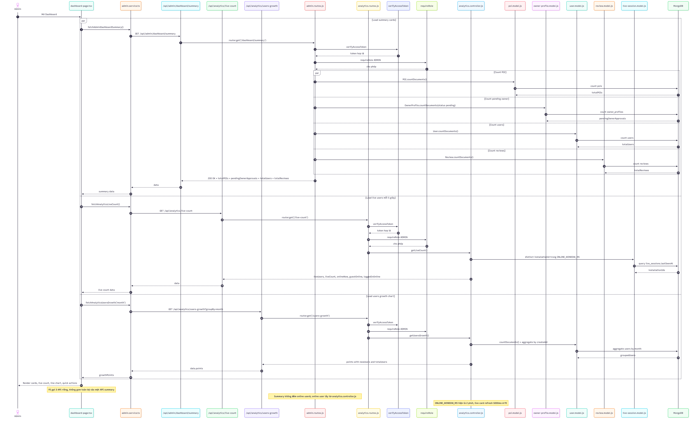
Web Admin UI
Đăng nhập Web Admin
Luồng đăng nhập quản trị trước khi truy cập dashboard và các module admin.
Web Admin UI
Quản lý địa điểm
Quản trị danh sách POI/quán ăn, địa chỉ, tọa độ và trạng thái hiển thị.
Web Admin UI
Tạo mới POI
Form tạo địa điểm mới, nhập thông tin quán, mô tả, tọa độ, danh mục và hình ảnh.
Web Admin UI
Cập nhật POI
Cập nhật thông tin địa điểm đã có để dữ liệu mobile luôn đồng bộ với backend.
Web Admin UI
Quản lý menu
Quản lý món ăn theo từng quán/POI, gồm tên món, giá, hình ảnh và trạng thái hiển thị.
Web Admin UI
Quản lý thuyết minh
Quản lý nội dung thuyết minh/audio theo địa điểm và ngôn ngữ.
Web Admin UI
Dev TTS Test
Kiểm thử tạo/preview giọng đọc TTS trước khi đưa audio vào app.
Web Admin UI
Quản lý đánh giá
Kiểm duyệt review/rating của người dùng, hỗ trợ ẩn hoặc xử lý đánh giá không phù hợp.
Web Admin UI
Duyệt chủ cửa hàng
Duyệt hồ sơ owner trước khi cho phép quản lý nội dung liên quan đến quán.
05 • Mobile App
Khối Mobile App .NET MAUI
Mobile là phần người dùng nhìn thấy trực tiếp. Các page chính gồm Splash, Login, Register, Main/Home, Search, FullMap, PoiDetail, Saved và Profile.
GPS hoặc chọn điểm thủ công, tính khoảng cách, lấy quán gần nhất và đưa vào hàng đợi audio.
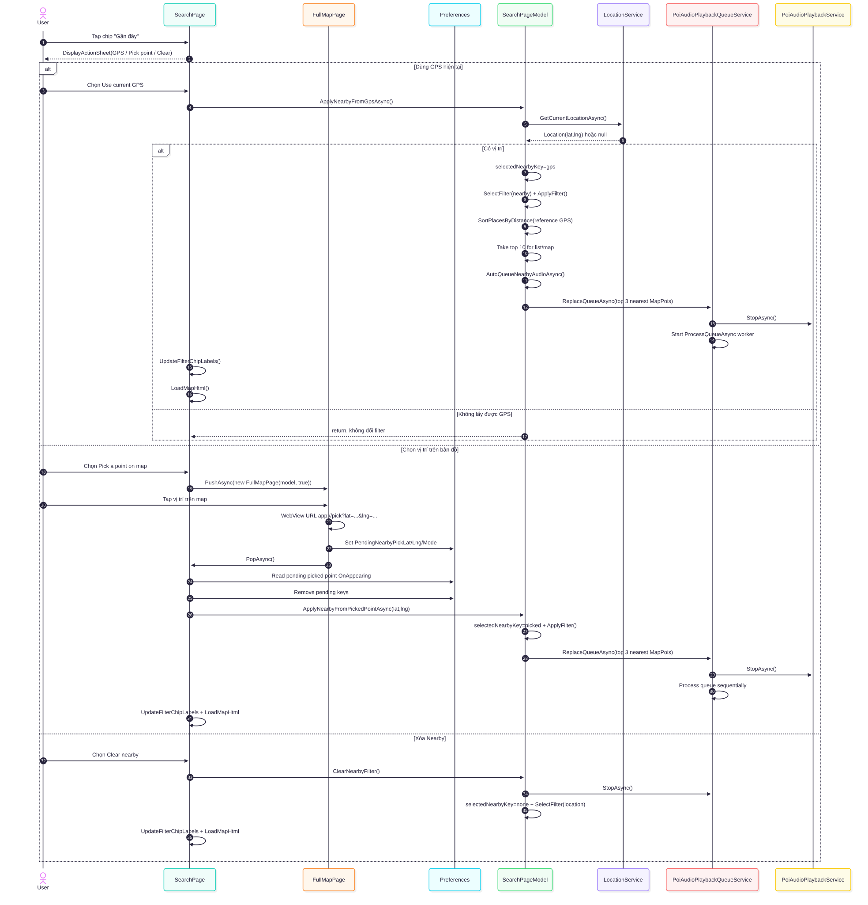
Mobile sequence/activity
06. Activity — Nearby Recommendation
Logic xin quyền vị trí, fallback chọn điểm, sort theo khoảng cách và tạo danh sách đề xuất.
06 • Backend
Backend Node.js/Express
Backend Node.js/Express là lớp API và nghiệp vụ đứng sau Mobile App và Web Admin. Backend xác thực JWT, kiểm role, đọc/ghi MongoDB, cung cấp dữ liệu POI/menu/review/audio và các API quản trị.
Ghi chú: Các sơ đồ/giao diện Web Admin đã được gom ở mục 04 — Web Admin và mục 11 — Diagram gallery. Backend section tập trung mô tả API, module xử lý nghiệp vụ và kết nối MongoDB.
07 • Data layer
Database design và mô hình dữ liệu
Vì backend dùng MongoDB nên trong PRD gọi là collection. Tuy nhiên vẫn trình bày dạng bảng để dễ bảo vệ.
Đã đổi theo yêu cầu: phần Database không nhúng Mermaid code nữa. Thay vào đó, PRD hiển thị trực tiếp sơ đồ Database Data Flow dạng ảnh SVG để nhìn giống tài liệu trình bày hơn.
Database Data Flow
Database Data Flow
Luồng dữ liệu từ Web Admin và Mobile App qua Backend API tới các MongoDB collections.
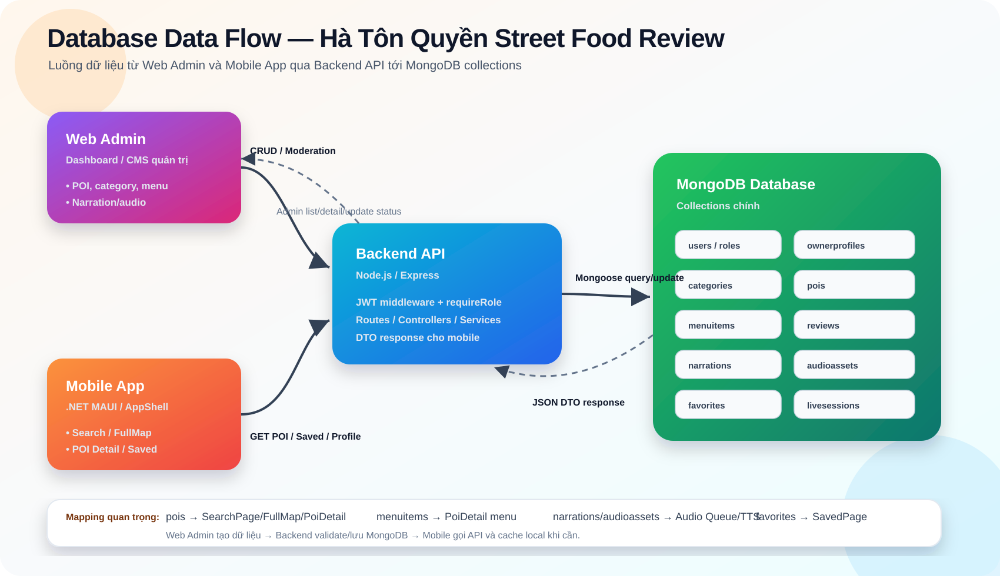
Mobile API Data Flow
Mobile API / Data Integration
Sequence app mobile gọi AuthService, PoiService, UserProfileService và nhận dữ liệu từ backend.
Mapping dữ liệu Database → Mobile Screen
Collection
Backend API
Mobile sử dụng ở đâu?
Vai trò trong PRD
pois
GET /api/pois, GET /api/pois/:id
HomePage, SearchPage, FullMapPage, PoiDetailPage
Dữ liệu lõi để hiển thị quán ăn trên bản đồ.
categories
GET /api/categories hoặc embedded trong POI
Filter Type, Home categories, POI Detail
Phân nhóm quán/món để lọc và trình bày.
menuitems
GET /api/pois/:id/menu
PoiDetailPage
Hiển thị món ăn, giá, trạng thái còn bán.
reviews
GET/POST /api/pois/:id/reviews
PoiDetailPage, Review section
Rating/comment của người dùng.
narrations, audioassets
GET /api/pois/:id/audio
Nearby Audio Queue, PoiDetail Play Audio
Phát audio/TTS giới thiệu quán.
userfavorites
GET /api/pois/favorites, POST/DELETE /api/pois/:id/favorite
SavedPage, PoiDetail favorite button
Lưu/bỏ lưu quán yêu thích.
users, roles
POST /api/users/login, PUT /api/users/me
LoginPage, ProfilePage, AppShell session
Xác thực và cá nhân hóa app.
08 • API surface
Hợp đồng API cho mobile
Các endpoint dưới đây là nhóm mobile cần dùng trực tiếp hoặc gián tiếp qua service.
REST JSON
Endpoint chính
Method
Endpoint
Mobile dùng để
Ghi chú
POST
/api/users/login
Đăng nhập, nhận accessToken + user.
AuthService đang trỏ tới users/login.
PUT
/api/users/me
Cập nhật profile.
Cần Bearer token.
GET/PATCH
/api/users/me/preferences
Đồng bộ preferredLanguage.
AppShell sync khi không phải guest.
GET
/api/pois?lang=vi
Load danh sách POI cho Search/Home/Map.
Public trước, token sau nếu cần.
GET
/api/pois/:id
Load POI detail.
Trả data theo ngôn ngữ.
GET
/api/pois/:id/menu
Load menu quán.
Mobile có fallback nhiều endpoint.
GET
/api/pois/:id/audio
Load audio asset của POI.
Nếu không có thì app fallback TTS/text.
GET
/api/pois/favorites
Danh sách quán đã lưu.
Cần token.
POST/DELETE
/api/pois/:id/favorite
Lưu/bỏ lưu quán.
Cần token.
GET
/api/maps/offline-manifest
Tải manifest map pack.
OfflineMapPackService dùng khi khởi tạo.
09 • Core flows
Luồng xử lý quan trọng
Các flow quan trọng của hệ thống mobile-app.
Sequence + Activity
Flow A — Search + Map + POI
1. User mở Search
SearchPageModel load user location và gọi PoiService.GetPoisAsync.
2. Backend trả POI
POI được map sang PoiMapItem/SearchPlaceItem.
3. App render list/map
SearchPage build HTML Leaflet và hiển thị marker.
4. User chọn quán
Mở PoiDetailPage hoặc FullMapPage focus đúng POI.
Flow B — Nearby + Audio
1. User chọn Nearby
Chọn GPS hoặc pick vị trí trên FullMap.
2. Tính khoảng cách
App so sánh userLat/userLng với từng POI.
3. Sort và đề xuất
Danh sách quán gần nhất được đưa lên UI.
4. Queue audio
PoiAudioPlaybackQueueService phát lần lượt, tránh trùng/overlap.
Flow C — Review / Comment
1. User nhập review
Người dùng mở PoiDetailPage, nhập rating và nội dung comment.
2. App kiểm tra session
Guest hoặc chưa login sẽ được yêu cầu đăng nhập trước khi viết đánh giá.
3. Gửi lên backend
User mail-login có access token sẽ gửi review qua ReviewService tới POST /api/reviews.
4. Admin kiểm duyệt
Backend lưu MongoDB, web-admin đọc /api/admin/reviews và hiển thị trong bảng quản lý.
Flow D — Xem tất cả review
1. User bấm Xem tất cả
Từ PoiDetailPage, người dùng mở màn hình PoiReviewsPage của quán hiện tại.
2. App tải danh sách review
ReviewService gọi API lấy đánh giá theo poiId và ngôn ngữ đang chọn.
3. Backend đọc MongoDB
Backend tìm danh sách đánh giá trong collection reviews theo địa điểm.
4. App hiển thị kết quả
PoiReviewsPage hiển thị toàn bộ đánh giá hoặc trạng thái chưa có review.
Mobile sequence/activity
07. Sequence — Audio Playback Fallback
Ưu tiên audio asset từ API/cache, nếu thiếu thì fallback đọc bằng TTS từ mô tả POI.
FullMapPage dùng MapLibre, cloud/offline/hybrid mode và trả tọa độ về Nearby pick flow.
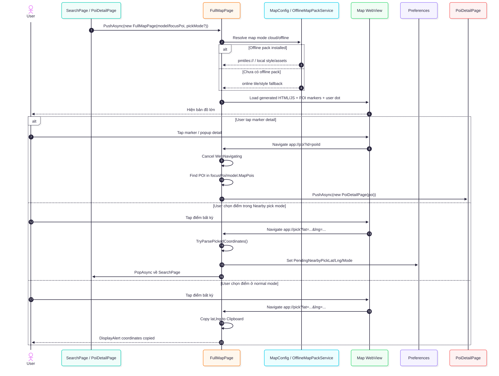
Mobile sequence/activity
10. Sequence — Offline Map Pack Download
Tải manifest, kiểm tra SHA-256, lưu map pack local và kích hoạt mode offline/hybrid.
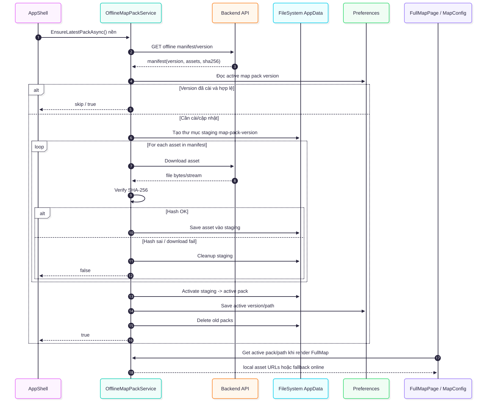
Mobile sequence/activity
11. Activity — Profile / Language / Dark Mode / Logout
Đổi ngôn ngữ, dark mode, profile info, logout và xóa session/token local.
Mobile sequence/activity
12. Sequence — Localization Update
AppText/LanguageService load JSON, cập nhật AppShell tabs và đồng bộ preferredLanguage.
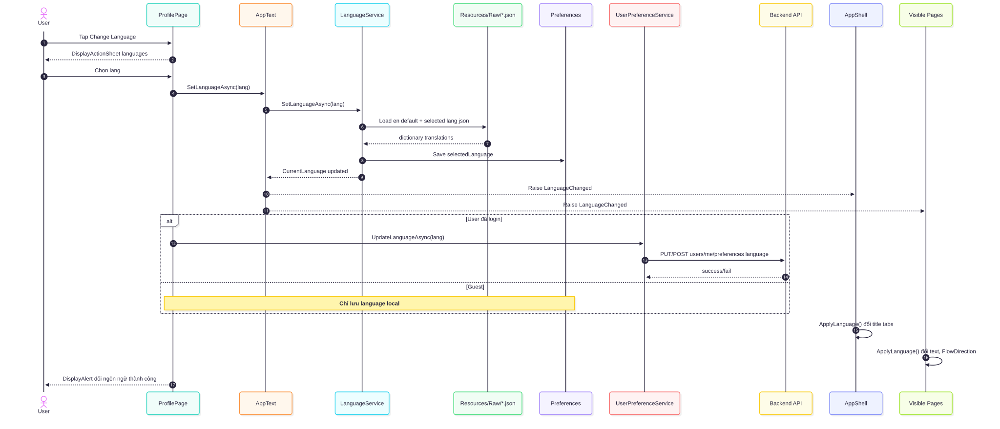
Mobile sequence/activity
13. Sequence — Saved Page
Đọc danh sách favorite, load POI đã lưu, bỏ lưu và mở lại PoiDetailPage.
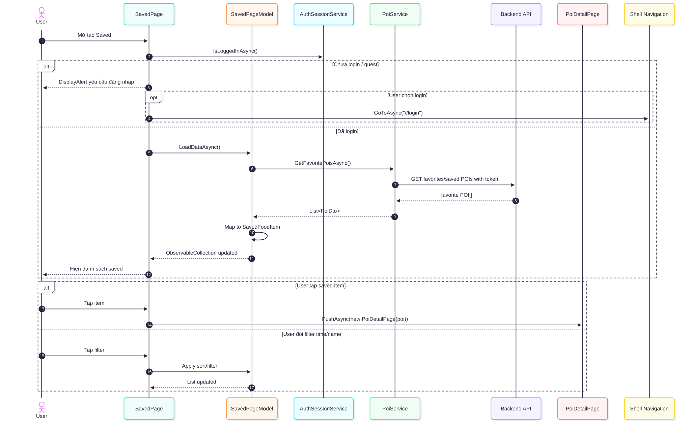
Mobile sequence/activity
14. Sequence — Mobile API / Data Integration
Bản đồ tương tác dữ liệu mobile với AuthService, PoiService, cache và backend API.
Mobile sequence/activity
15. Review / Comment — Sequence
Guest bị yêu cầu đăng nhập; user đã đăng nhập gửi rating/comment lên backend, lưu MongoDB và hiển thị ở Web Admin.
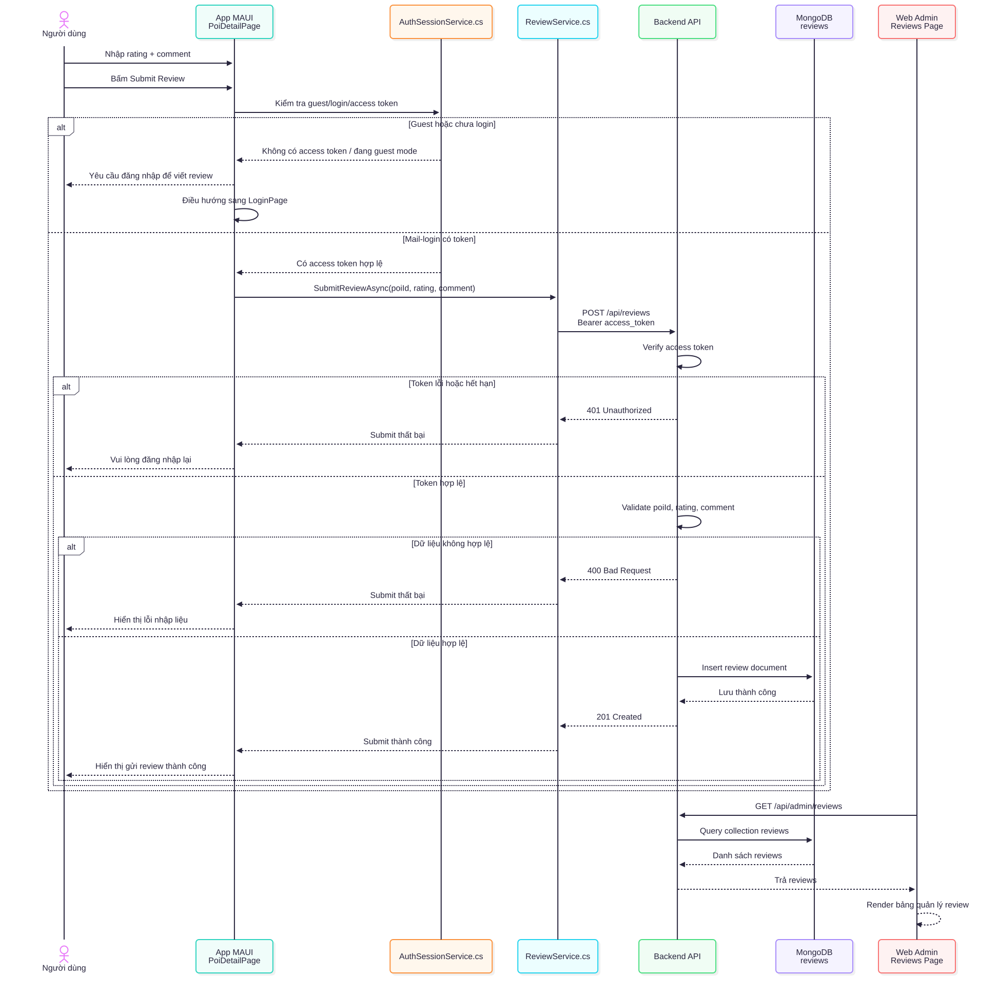
Mobile sequence/activity
16. Sequence — View All Reviews
Người dùng bấm Xem tất cả, app mở PoiReviewsPage, tải toàn bộ đánh giá theo quán và hiển thị theo ngôn ngữ hiện tại.
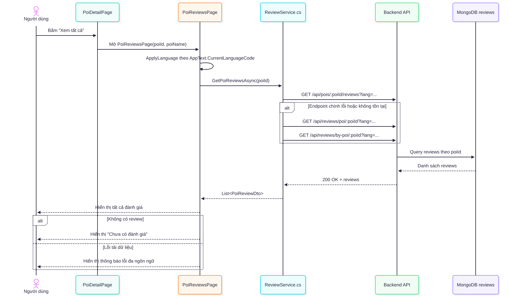
10 • Rules & states
Quy tắc nghiệp vụ và trạng thái
Ghi rõ để PRD không bị mơ hồ khi chuyển từ source sang tài liệu.
Business rules
POI visibility
status: draft / active / hidden.
isVisible quyết định có hiển thị public không.
POI cần lat/lng hợp lệ để hiển thị map.
Audio fallback
Ưu tiên audio asset từ API.
Nếu thiếu audio thì dùng fallback speech từ name + short/fullDescription.
Queue tránh phát chồng nhiều POI.
Language
UI load JSON theo AppText.
Backend POI gọi ?lang=....
Guest mode không sync ngôn ngữ về backend.
Acceptance demo: mở backend, đăng nhập app, load POI từ API, dùng Search/Nearby, mở FullMap, nghe audio/TTS, lưu POI, đổi ngôn ngữ/dark mode và chứng minh dữ liệu POI thuộc Hà Tôn Quyền.
11 • Diagram gallery
Toàn bộ hình/sơ đồ đã chèn
Tất cả hình/sơ đồ trong folder diagram/ đã được chèn vào gói HTML để trình bày và phóng to khi cần.
26 mục hiển thị
Mobile sequence/activity
01. Sequence — App Startup & Session
Mở app, load AppShell, đồng bộ ngôn ngữ, kiểm tra session và chuẩn bị offline map pack.
Mobile sequence/activity
02. Sequence — Login / Register / Guest
Luồng đăng nhập backend, đăng ký và guest mode trước khi vào main tabs.
Mobile sequence/activity
03. Sequence — SearchPage Load POI + Map
SearchPageModel gọi PoiService, lấy POI public theo ngôn ngữ và render marker lên map.
Mobile sequence/activity
04. Activity — Search Filter
Người dùng chọn Location / Nearby / Price / Type, app lọc danh sách POI và cập nhật map.